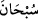
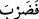
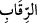
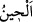
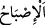
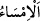
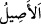
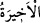

niyaz ederiz. Çünki O, yüceler yücesi olan Kerîm’dir.
17-18. Haydi siz, akşama ulaştığınızda (akşam ve yatsı vaktinde) sabaha
kavuştuğunuzda, gündüzün sonunda ve öğle vaktine eriştiğinizde Allâh’ı tesbih
edin (namaz kılın), ki göklerde ve yerde hamd O’na mahsustur.
“Haydi siz, akşama ulaştığınızda (akşam ve yatsı vaktinde)” akşama girdiğiniz
vakitte ve “sabaha kavuştuğunuzda,” sabaha girdiğiniz saatte “gündüzün sonunda ve
öğle vaktine eriştiğinizde” girdiğinizde “Allâh’ı tesbih edin (namaz kılın),”
“
” suda veya havada hızlıca gitmek, yüzmek demektir. “
(tesbîh)” ise Allâh’ı
tenzîh etmek/bütün noksanlardan ve kusurlardan uzak olduğunu ikrar etmektir. Asıl
anlamı Allâh’a ibâdette hızlı hareket etmektir. Söz, fiil veya niyyet olsun ibâdetler için
genel bir terim hâline getirilmiştir. “es-Sübbûh” (Bütün kusurlardan münezzeh.) ve “el-
Kuddûs” (Cümle eksiklerden pâk ve yüce) Allâh’ın isimlerindendir. Arap dilinde bu
vezinde bu iki kelimeden başkası yoktur.
Burada “
(tesbih edin)” kelimesi, “
(mağfiret et)” ve “
boyunlarını vurun.” (Muhammed, 47/4) emir yerine konulmuş bir masdardır. Burada
tesbîh, gerçek ve zâhir mânâsına hamledilmiştir ki Allâh’ı kötülükten tenzih ve O’nu
hayır ile senâ edip övmektir. Yâni ey (hakkı bâtıldan) ayıran akıl sâhipleri! Sevab ve
nîmetlerin amel eden mü’minler için, azab ve cehennemin yalanlayan kâfirler için
olduğunu bilince, Allâh’ı tesbîh edin, yâni şânına yakışmayan her şeyden O’nu tenzîh
edin.
“
” uzun veya kısa bütün zamanlar için kullanılması uygun olan belirsiz bir vakittir.
Bu âyette olduğu gibi muzâfun ileyh ile özel bir vakti bildirir. “
” sabaha girmek
demek olduğu gibi “
” da akşama girmek demektir. Akşam ve sabah birbirlerinin
zıdlarıdır.
Bazıları demiştir ki: “Günün ilk vakti “
(tan yerinin ağarma)” vaktidir. Sonra “
(sabah)”, sonra “
(sabahın erken vakitleri)”, sonra “
”, sonra “
(kuşluk vakti)”, sonra “
”, sonra “
”, sonra “
(öğle)”, sonra “
”, sonra “
”, sonra “
(ikindi)”, sonra “
(gurup vakti)”, sonra “
(akşam)”,
sonra şafağın kızıllığı kaybolunca “
(yatsı)” olur.”
“Ki göklerde ve yerde hamd O’na mahsustur.” Göklerin ve yerin ehli özellikle O’na
hamd ve senâ eder, O’nu överler. Yâni, siz de bütün vakitlerde O’nun büyük nîmetlerine
karşılık O’na hamd edin. Hamdin ancak Allah Teâlâ’ya mahsus olduğunun ve hamdin